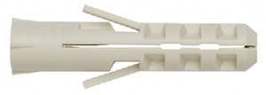

Дюбель нейлоновый PND
Цена от
0,77 ₽
Размерный ряд
Очистка отверстия от пыли и мусора
Дюбель нейлоновый PND Нейлоновый дюбель PND: надежное решение для монтажа Что такое нейлоновый дюбель PND Нейлоновый дюбель PND — это универсальный крепежный элемент, изготовленный из высококачественного нейлона, предназначенный для монтажа различных конструкций в бетонные, кирпичные и другие полнотелые основания. Благодаря особой конструкции и материалу изготовления, дюбель обеспечивает надежное и долговечное крепление. Конструкция и особенности Конструктивные элементы дюбеля PND включают: Расширяющуюся часть для надежного сцепления с материалом основания Гладкую поверхность для легкого монтажа Специальные ребра для дополнительной фиксации Увеличенную зону расклинивания Преимущества использования Основные достоинства нейлонового дюбеля PND: Высокая прочность и долговечность материала Устойчивость к воздействию влаги и химических веществ Простота монтажа без специальных навыков Универсальность применения Экономичность при массовом использовании Возможность многократного использования п
Варианты и размеры (1)
| Наименование | Размер | Длина, мм | Материал | Покрытие | Цена |
|---|---|---|---|---|---|
| Дюбель нейлоновый PND | 0,77 ₽ |